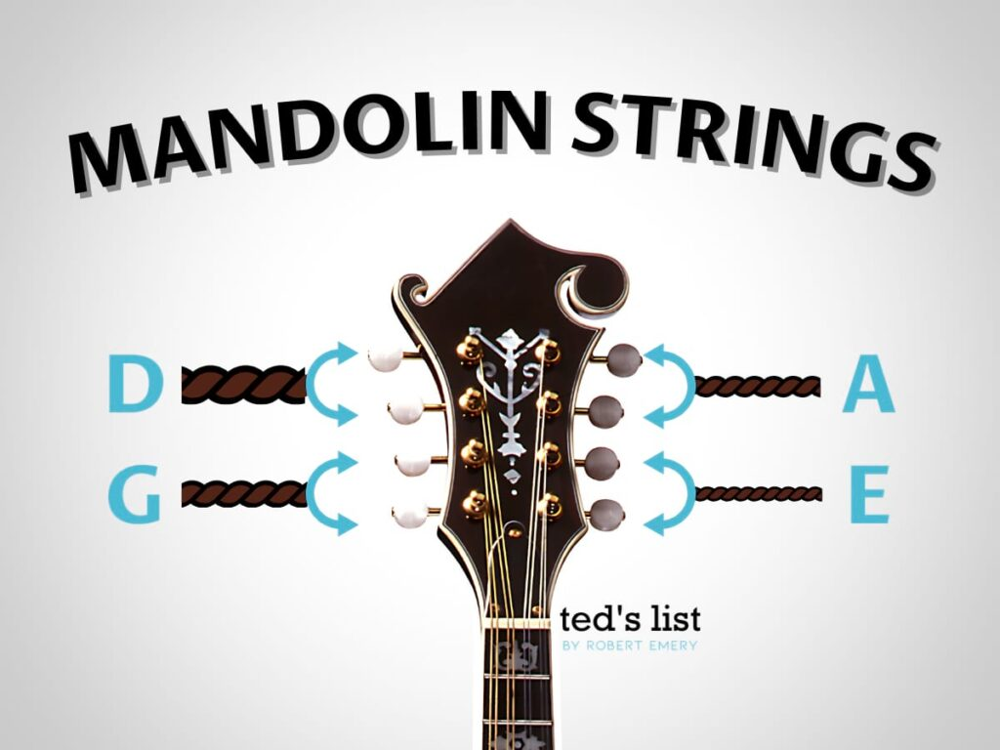

Paso 1: La Afinación (Sol-Re-La-Mi)
La mandolina se afina en quintas justas, idéntico al violín. Las cuerdas, desde la más gruesa (arriba) a la más delgada (abajo), son:
- 4ta Cuerda (G): Sol (la más grave)
- 3ra Cuerda (D): Re
- 2da Cuerda (A): La
- 1ra Cuerda (E): Mi (la más aguda)
Usa un afinador electrónico para asegurar que cada par de cuerdas suene al unísono perfecto.
